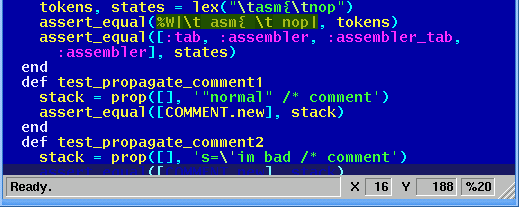

kindly hosted by

What Is AEditor?
AEditor is a programmers editor which is capable of syntax coloring and has some scripting support. It's crossplatform and works on: windows, macosx and unix. It's written entirely in Ruby in less than 10.000 lines of code.

Escape sequences within strings and literals are nicely colored. Maybe you recognize the color-theme from Turbo Pascal? If you desire then you can enable the scrollbar or switch to fullscreen-mode or change the color theme.
AEditor is being developed by Simon Strandgaard and has been released under Ruby's license.